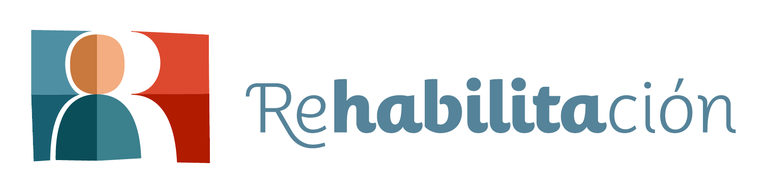

—
Las reprogramadas y canceladas no cuentan como atendidas ni como inasistencia.
—
Mediana y percentil 90. Con Santo Domingo seleccionado solo, se abre por sus seis localidades.
Mediana de cada etapa entre las visitas que pasan por ella.
Solo los departamentos aptos para medir esperas. Mediana y percentil 90.
El volumen muestra cuándo llegan los pacientes; la espera, cuánto esperan a esa hora (celdas con menos de 30 visitas medibles en blanco).
Mediana y percentil 90 de la espera desde la llegada.
Un tramo es cuello de botella cuando su percentil 90 semanal supera la cerca de Tukey de su propio año de referencia (Q3 + 1,5 × RIC) durante tres semanas seguidas. Son relevantes los episodios cuyo percentil 90 supera 15 minutos. Esta pestaña no depende de los filtros.
| Tramo | Santo Domingo | Santiago | Azua | Total |
|---|
En Santo Domingo se detectan por localidad. Analizado como un solo bloque, el centro no muestra ningún episodio: el del Edificio 1-A se diluye entre las casi 6.000 visitas semanales del centro.
| Factor del RIC | Semanas seguidas | Episodios | Relevantes |
|---|
Gris: año de referencia (oct. 2024 – sep. 2025). Petróleo: período de análisis. Línea naranja punteada: cerca de Tukey. Puntos rojos: semanas de un episodio.
| Centro | Localidad | Tramo | Inicio | Fin | Semanas | Cerca (min) | P90 máx. (min) | Relevancia |
|---|
Análisis exploratorio: las cifras muestran asociaciones, no causas.
Sigue los filtros de arriba.
Inasistencia a la siguiente cita (60 días) por quintil de espera en la visita atendida, minutos. Todos los centros.
Cerca de 1, la espera sube con la demanda del día; cerca de 0, depende de cómo se reparten las citas en el horario.
Datos del sistema de gestión de citas de la ADR, seudonimizados y agregados por localidad y área: el tablero no contiene registros de pacientes. Tres centros: Santo Domingo (edificios 1-A, 1-B, 2-A y 4-A, SD Este y SD Oeste), Santiago y Azua. Los tiempos usan solo las visitas con secuencia completa, excluyen los departamentos con registro diferido (Estudios e Imágenes, Terapia del Lenguaje, Intervención Temprana, Odontología y Psicopedagogía) y descartan la primera y la última semana del período. La inasistencia se calcula sobre las citas atendidas, no presentadas o con llegada sin atención. Sin filtros, las cifras coinciden con el trabajo de grado del Grupo 1.